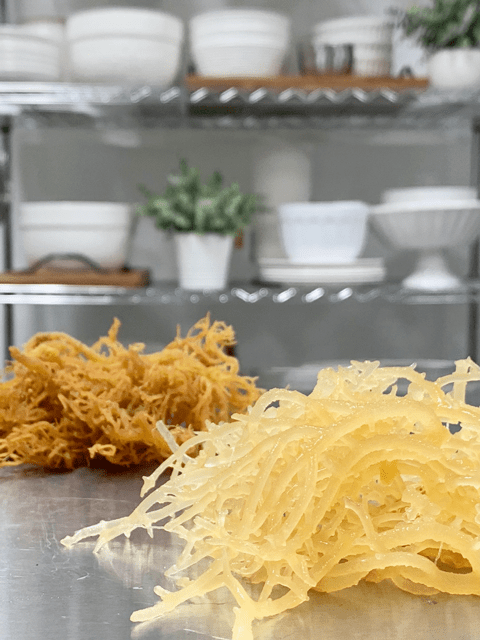
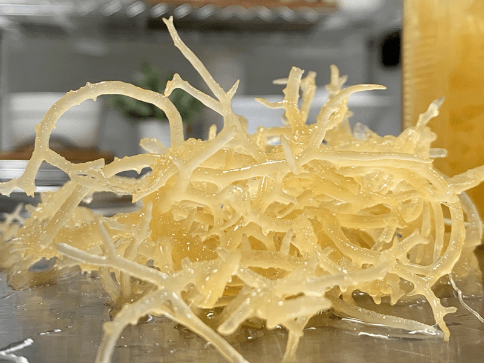

Irish Moss Gel (paste)
 Irish Moss is unprocessed, raw seaweed, which can be used as a gelling agent without cooking. It’s an amazing thickener and emulsifier (able to bind fat and water-based ingredients) and can help cut down on the number of nuts needed in many recipes. It is also known as pearl moss, carrageen moss, seamuisin, curly moss, curly gristle moss, Dorset weed, jelly moss, sea moss, white wrack, and ragglus fragglus.
Irish Moss is unprocessed, raw seaweed, which can be used as a gelling agent without cooking. It’s an amazing thickener and emulsifier (able to bind fat and water-based ingredients) and can help cut down on the number of nuts needed in many recipes. It is also known as pearl moss, carrageen moss, seamuisin, curly moss, curly gristle moss, Dorset weed, jelly moss, sea moss, white wrack, and ragglus fragglus.
In its fresh condition, it is soft and cartilaginous, varying in color from a greenish-yellow to red, dark purple, or purplish-brown. I have only used the yellow tinted one.
It is easy to use, but it can be challenging to find in health food stores. It’s always best to source seaweed from a reputable company that practices sustainability and harvests responsibly.
Over the years, I have tested several different brands, and my all-time favorite is Whole Leaf Irish Moss as well as Markus Rothkranz Sea, Moss. I don’t use the powder or flake form, because it’s been dried through cooking in an oven and it loses the great qualities that the fresh stuff has.
There is a lot of controversy about Irish moss. There have been health concerns about the food additive “carrageenan gum,” which is derived from Irish moss. This additive is found in many commercially, highly processed foods. It is a chemically extracted isolate and is not the same as Irish Moss in its natural state.
Here lies the problem…
Everyone stopped right there with the headlines that they read and touted Irish Moss as “harmful” to use in raw food recipes. But from all the reading that I had have done… it is not the same as consuming pure Irish Moss. Carrageenan is a heated and concentrated form of Irish Moss that is has been highly processed into chemical form. Carrageenan has lost the nutritional value of Irish Moss and makes it a health hazard. Mike Adams, in his book Food Forensics, states, “The native carrageenan used in foods begins not degraded, but a certain percentage becomes inherently degraded through the alkaline-based extraction process. This process contributes to a potentially dangerous and inflammatory form of carrageenan seeping into foods.“
There are a few sites out there that speak strongly against it and others that don’t. To read all points of view, please click (here). I ask that you always do your own thorough research, read the papers yourself, and make your own decisions. I am not here to debate its pros and cons. Please do your homework if you are concerned about it — updated 01/14/17.

Ingredients:
Yields roughly 2 cups paste
Preparation:
- Rinse the Irish moss in cold water until all tiny bits of debris have been removed. Continue rinsing until the water runs clear.
- Allow the Irish moss to soak in a large bowl of cold water for 6-12 hours. (I prefer overnight, rinsing it whenever I think about it)
- It expands, so make sure you have enough water to keep it covered.
- Don’t worry about the odor; when the Irish moss is ready to use, it is practically odorless and tasteless.
- I let my soak on the kitchen counter.
- After the soaking process is complete, drain, discard the soak water and give the Irish moss one last rinse.
- In a high-speed blender, add the Irish moss and 2 cups of water, process till well blended into a paste.
- There are many different ranges of texture that you can create when making Irish moss paste. You can use less water to make it very, very thick, or more water to make it creamy.
- If you have a Vitamix with the plunger, use it… it is the key to success. If you don’t have a plunger, you will have to spot the machine several times to scrape down the sides.
- Rub some of the paste between your fingers; it should be smooth. If you feel any lumps/grains continue blending. I learned that if you don’t blend it enough, it won’t set up.
- The moss is ready when it has a creamy white color and nearly double size and weight than its original dry state.
- Store the gel in an airtight container in the fridge for 2-3 weeks (the cautious approach I’ve had it last way longer).
- To use in a recipe, use 1-5 Tbsp of Irish moss gel to 1 cup of product. The quantity depends on the recipe you are making and the thickness desired.

The gel is used in different recipes, or you can add it to a salad dressing, mayonnaise, smoothie, or any other dish that requires thickening. Use 2-3 tablespoons of gel for 1 cup of dough or liquid. It works very well also to keep nut milks from separating while in the fridge and to make them thicker (one teaspoon will suffice here).
Irish Moss will make any liquid fluffy and is a substitute for gelatin and other thickeners. You may use it for sweet desserts, ice-creams, shakes, parfait, mousse, pies, as well as savory dishes, nut cheese, and nut “yogurt.” This product can thicken your recipes and give a gel-like texture that you would get from adding a bunch of fat and nuts. So you really can make guilt-free raw desserts and dressings!
- For a two-cup liquid drink, I add roughly 1 tsp of Irish moss paste to make a creamy beverage.
- Add a smooth consistency to smoothies and juices.
- Create a mousse-like texture in raw puddings and mousse.
- Create a firm texture in raw cheesecakes
- Reduce the amount of oil in a salad dressing by adding Irish moss.
- Thicken a sauce
- Reduce the number of nuts used in cheese making.
- The gel itself makes for a beautiful face make. Apply and let it sit till dry, 60 minutes or so. Wash off with warm water.

- It has a soothing effect on the mucous membranes throughout the body. It has a softening effect on the tissues and helps many respiratory problems, including bronchitis and pneumonia.
- Soothes the mucous membranes of the digestive tract and also has a mild laxative effect.
- Contains antioxidants to help fight free radicals
- It has a large array of ionic minerals. Iodine being one mineral that supports your thyroid and many problems associated with poor thyroid function, including fatigue, inability to tolerate cold, slow heart rate, low metabolism, poor skin, and hair, etc.
- Used externally, it softens and soothes the skin. Put it on your wrinkles and any dark circles under your eyes! It also eases sunburn, chapped skin, eczema, psoriasis, and other rashes.
- Boosts your skin and hair with collagen.
© AmieSue.com